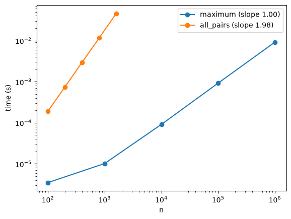
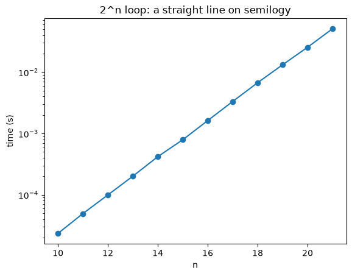
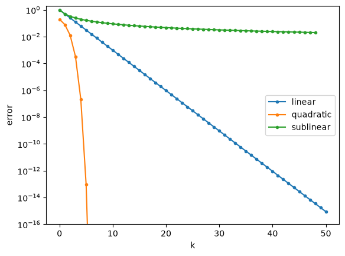

Big-O and Convergence of Algorithms#
This chapter answers two questions about an algorithm:
How does its cost grow when the input gets bigger? (Big-\(O\))
How fast does it converge to the answer, and when should it stop? (convergence)
Read the text and run the example cells as you go. The Activity at the end has three problems for you to solve.
import time
import numpy as np
import matplotlib.pyplot as plt
rng = np.random.default_rng(seed=47)
def time_function(f, x):
'''wall-clock time (in seconds) of one call f(x)'''
start = time.perf_counter()
f(x)
return time.perf_counter() - start
1. Big-\(O\): what it tells you#
Big-\(O\) answers one question: if the input gets bigger, roughly how much more work is needed? It looks at large inputs and ignores constant factors, such as a faster computer.
Definition. \(f = O(g)\) as \(x \to \infty\) if there are constants \(c > 0\) and \(x_0 \ge 0\) with
In words: from some point \(x_0\) on, \(f\) never exceeds a fixed multiple of \(g\), so \(f\) grows no faster than \(g\). It is an upper bound.
Simplifying Big-\(O\)#
Rule 1: drop constant factors |
Rule 2: keep only the fastest-growing term |
|---|---|
\(O(5x) = O(x)\) |
\(3n^2 + 10n + 50 = O(n^2)\) |
\(O(c) = O(1)\) |
\(n + \log n = O(n)\) |
\(O(c\,f(x)) = O(f(x))\) |
\(2^n + n^3 = O(2^n)\) |
Both rules work because Big-\(O\) is about large \(n\): constants do not change how the work grows, and the fastest-growing term is much bigger than all the others.
Cheat sheet: common Big-\(O\) patterns#
code pattern |
Python snippet |
Big-\(O\) |
example algorithm |
|---|---|---|---|
no loops |
|
\(O(1)\) |
reading an array element by index |
halve the input each step |
|
\(O(\log n)\) |
binary search |
one loop over \(n\) items |
|
\(O(n)\) |
going through an array once |
repeat a halving loop \(n\) times |
|
\(O(n \log n)\) |
merge sort; Python’s |
two nested loops |
|
\(O(n^2)\) |
bubble sort; every cell of an \(n \times n\) grid |
try every subset |
|
\(O(2^n)\) |
listing all subsets of a list |
The rows go from slowest-growing (top) to fastest-growing (bottom).
2. Proving Big-\(O\) vs. measuring it#
Big-\(O\) is a statement about all \(x \ge x_0\), so it is proved (with constants \(c\) and \(x_0\)). An experiment only looks at a few values of \(n\): it can check a prediction, but not prove it.
Polynomial growth: use a loglog plot#
If the time grows like \(t(n) \approx c\, n^a\), then \(\log t \approx a \log n + \log c\). On a loglog plot the points lie on a line whose slope is the exponent \(a\). We estimate the slope with np.polyfit.
Below we time two functions. From the cheat sheet we predict \(O(n)\) for maximum (one loop) and \(O(n^2)\) for all_pairs (two nested loops).
def maximum(x):
xmax = -np.inf
for xi in x:
if xi > xmax:
xmax = xi
return xmax
def all_pairs(x):
total = 0.0
for a in x:
for b in x:
total += a * b
return total
ns_max = np.array([10**2, 10**3, 10**4, 10**5, 10**6])
ns_pairs = np.array([100, 200, 400, 800, 1600])
t_max = np.array([time_function(maximum, rng.random(n).tolist()) for n in ns_max])
t_pairs = np.array([time_function(all_pairs, rng.random(n).tolist()) for n in ns_pairs])
slope_max = np.polyfit(np.log(ns_max[2:]), np.log(t_max[2:]), 1)[0] # large n only
slope_pairs = np.polyfit(np.log(ns_pairs), np.log(t_pairs), 1)[0]
fig, ax = plt.subplots()
ax.loglog(ns_max, t_max, "o-", label=f"maximum (slope {slope_max:.2f})")
ax.loglog(ns_pairs, t_pairs, "o-", label=f"all_pairs (slope {slope_pairs:.2f})")
ax.set_xlabel("n")
ax.set_ylabel("time (s)")
ax.legend()
plt.show()

The slopes come out close to \(1\) and \(2\), which agrees with the predictions. Two things to keep in mind:
Fit only large \(n\). For small inputs the fixed cost of calling a function dominates and flattens the curve (that is why
slope_maxuses only \(n \ge 10^4\)).Large lower-order terms can fool you. \(f(n) = n^2 + 10^6 n\) is \(O(n^2)\) and not \(O(n)\), but for \(n\) up to a few thousand the \(10^6 n\) term dominates, and the measured slope is \(1\):
def f_trap(n):
return n**2 + 1e6 * n
ns_small = np.array([100, 200, 400, 800, 1600])
ns_large = np.array([1e8, 2e8, 4e8, 8e8])
print("slope for small n:", np.polyfit(np.log(ns_small), np.log(f_trap(ns_small)), 1)[0])
print("slope for large n:", np.polyfit(np.log(ns_large), np.log(f_trap(ns_large)), 1)[0])
slope for small n: 1.0005189594642414
slope for large n: 1.995874758424686
Exponential growth: use a semilogy plot#
If \(t(n) \approx c\, b^{\,n}\), then \(\log t \approx n \log b + \log c\). On a semilogy plot (only the \(y\)-axis logarithmic) the points lie on a straight line with slope \(\log b\), and \(b = e^{\text{slope}}\) is the growth factor per extra element.
count_subsets runs its loop once for every subset of \(n\) items, that is \(2^n\) times, so we expect \(b = 2\).
def count_subsets(n):
count = 0
for k in range(2**n):
count += 1
return count
ns_exp = np.arange(10, 22)
t_exp = np.array([time_function(count_subsets, n) for n in ns_exp])
slope_exp = np.polyfit(ns_exp, np.log(t_exp), 1)[0]
print("slope:", slope_exp, " growth factor b = e^slope:", np.exp(slope_exp))
fig, ax = plt.subplots()
ax.semilogy(ns_exp, t_exp, "o-")
ax.set_xlabel("n")
ax.set_ylabel("time (s)")
ax.set_title("2^n loop: a straight line on semilogy")
plt.show()
slope: 0.6974347290629975 growth factor b = e^slope: 2.0085935063792273

3. Convergence of algorithms#
Many numerical algorithms produce better and better approximations \(x_k\) of a true solution \(x_\ast\). The error is
and the algorithm converges if \(\epsilon_k \to 0\). In practice \(x_\ast\) is unknown, so we monitor the change per iteration,
and stop when it is small enough.
Rate of convergence: how fast does the error shrink?#
The key question: by how much does one iteration shrink the error?
name |
each iteration … |
example errors |
to reach \(10^{-6}\) |
|---|---|---|---|
sublinear |
shrinks the error by less and less: \(\epsilon_{k+1}/\epsilon_k \to 1\) |
\(\epsilon_k = 1/k\): \(1, 0.5, 0.33, 0.25, \ldots\) |
\(10^6\) iterations |
linear |
shrinks the error by the same factor \(C < 1\): \(\epsilon_{k+1} \approx C\,\epsilon_k\) |
\(C = 0.5\): \(1, 0.5, 0.25, 0.125, \ldots\) |
\(20\) iterations |
quadratic |
squares the error, so the correct digits double: \(\epsilon_{k+1} \approx C\,\epsilon_k^2\) |
\(10^{-1}, 10^{-2}, 10^{-4}, 10^{-8}\) |
\(3\) iterations |
The order \(q\) (precise definition). The convergence has order \(q\) if \(\epsilon_{k+1}/\epsilon_k^{\,q} \to C\) with \(0 < C < \infty\). Linear and sublinear both have \(q = 1\) (only \(C\) differs: \(C < 1\) vs. \(C = 1\)); quadratic has \(q = 2\); any \(q > 1\) is called superlinear.
Seeing the rate: plot the error with semilogy#
Taking logarithms of \(\epsilon_{k+1} \approx C\,\epsilon_k^{\,q}\) gives \(\log \epsilon_{k+1} - q \log \epsilon_k \approx \log C\). So on a semilogy plot:
linear (\(q = 1\)): a straight line with slope \(\log C\);
quadratic (\(q = 2\)): the curve bends down, steeper and steeper;
sublinear: the curve flattens.
eps_linear = [1.0]
for k in range(50):
eps_linear.append(0.5 * eps_linear[-1]) # C = 0.5, q = 1
eps_quadratic = [0.2]
for k in range(9):
eps_quadratic.append(2.0 * eps_quadratic[-1]**2) # C = 2, q = 2
eps_sublinear = [1.0 / k for k in range(1, 50)] # 1/k
fig, ax = plt.subplots()
ax.semilogy(eps_linear, "o-", ms=3, label="linear")
ax.semilogy(eps_quadratic, "o-", ms=3, label="quadratic")
ax.semilogy(eps_sublinear, "o-", ms=3, label="sublinear")
ax.set_ylim(1e-16, 2)
ax.set_xlabel("k")
ax.set_ylabel("error")
ax.legend()
plt.show()

Estimating \(q\) from data#
Asymptotically, \(\log\bigl|\log(\epsilon_{k+1}/\epsilon_k)\bigr|\) is roughly a line in \(k\) with slope \(\log q\). Fitting that line gives a rough but easy estimate of \(q\):
def estimate_q(eps):
'''estimate the order of convergence q from a sequence of errors'''
x = np.arange(len(eps) - 1)
y = np.log(np.abs(np.diff(np.log(eps))))
line = np.polyfit(x, y, 1)
return np.exp(line[0])
print("linear :", estimate_q(eps_linear))
print("quadratic:", estimate_q(eps_quadratic))
print("sublinear:", estimate_q(eps_sublinear))
linear : 1.0
quadratic: 1.9999999999999998
sublinear: 0.9466399163308074
The sublinear estimate (\(0.95\)) is below \(1\) because 49 terms are not yet “large \(k\)”: for longer sequences it approaches \(1\). Just like for Big-\(O\), an estimate from finitely many data points describes the asymptotic behaviour only once \(k\) is large enough.
Floating point sets a floor. A double carries about 16 significant digits, so no error can drop below about \(10^{-16}\) relative to the solution. Never ask an algorithm for more accuracy than that, and always cap the number of iterations.
Activity#
Three problems. Each step says what your code should do. When you write a function, its inputs and result are described first; the detailed steps are in a collapsed Steps box, so open it only if you need it. Write the Python yourself in the empty cell below, then run the check cell: it prints your results next to the expected results. If they match, move on; if not, look for the mistake. Open a Hint only when you are stuck.
About pass. Some empty cells contain a function with only the line pass inside. pass is a placeholder that does nothing: Python needs at least one line inside a function, and pass fills that spot until you write your own code. When you write your code, delete the pass line. If a check prints None or shows an error, the function is not finished yet (it may still contain only pass).
Useful Python for this activity
you want to … |
Python |
|---|---|
loop over positions \(0, \ldots, n-1\) |
|
loop over later positions \(i+1, \ldots, n-1\) |
|
a sorted copy of a list |
|
add a value to the end of a list |
|
the last value of a list |
|
absolute value, logarithm |
|
a list as a NumPy array |
|
slope of \(\log t\) against \(\log n\) |
|
Problem 1: finding duplicates two ways (Big-\(O\))#
Goal: decide whether a list contains the same value twice, in two different ways; predict the Big-\(O\) of each from the cheat sheet, then check the prediction by timing.
Step 1: compare every pair#
Write a function has_duplicate_nested(x).
Input
x: a list of numbers, for example[3, 1, 4, 1].
Returns True if some value appears twice in x, and False otherwise. Example: has_duplicate_nested([3, 1, 4, 1]) gives True.
Steps (open if you need them)
Your function:
finds the length \(n\) of the list
x;loops over every position
ifrom0ton - 1, and inside it over every later positionj(fromi + 1ton - 1), so that each pair is compared once;returns
Trueas soon as it finds two equal valuesx[i] == x[j];returns
Falseif the loops finish without finding a pair.
def has_duplicate_nested(x):
# Write your code here, then delete the line `pass` below.
pass
# check: compare your results with the expected ones
print("has_duplicate_nested([3, 1, 4, 1]) =", has_duplicate_nested([3, 1, 4, 1]), " (expected: True)")
print("has_duplicate_nested([3, 1, 4, 5]) =", has_duplicate_nested([3, 1, 4, 5]), " (expected: False)")
has_duplicate_nested([3, 1, 4, 1]) = None (expected: True)
has_duplicate_nested([3, 1, 4, 5]) = None (expected: False)
Step 2: sort first#
After sorting, equal values sit next to each other, so one pass over neighbours is enough.
Write a function has_duplicate_sorted(x).
Input
x: a list of numbers, as in Step 1.
Returns True or False, exactly like has_duplicate_nested: the two functions give the same answers, only the method differs.
Steps (open if you need them)
Your function:
makes a sorted copy of
xwithsorted(x);goes once through the sorted list and compares each element with the next one;
returns
Trueas soon as two neighbours are equal;returns
Falseif it reaches the end without finding equal neighbours.
Predict: sorting costs \(O(n \log n)\) and the pass costs \(O(n)\). What is the total? (Rule 2!)
def has_duplicate_sorted(x):
# Write your code here, then delete the line `pass` below.
pass
# check: compare your results with the expected ones
print("has_duplicate_sorted([3, 1, 4, 1]) =", has_duplicate_sorted([3, 1, 4, 1]), " (expected: True)")
print("has_duplicate_sorted([3, 1, 4, 5]) =", has_duplicate_sorted([3, 1, 4, 5]), " (expected: False)")
has_duplicate_sorted([3, 1, 4, 1]) = None (expected: True)
has_duplicate_sorted([3, 1, 4, 5]) = None (expected: False)
Step 3: check your predictions by timing#
Use lists without duplicates (the worst case: every pair must be checked). rng.permutation(n).tolist() gives such a list.
Write code that:
uses the sizes
ns_nested = [250, 500, 1000, 2000]for the nested version andns_sorted = [10**4, 10**5, 10**6]for the sorted version;for each size \(n\), creates a list without duplicates with
rng.permutation(n).tolist()and times the function on it withtime_function;computes the
loglogslope of each version withnp.polyfit(np.log(ns), np.log(ts), 1)[0]and prints it;plots both versions on one
loglogfigure (fig, ax = plt.subplots()), with a legend showing the slopes.
Hint
The slope: np.polyfit(np.log(ns_nested), np.log(t_nested), 1)[0]. Use ax.loglog(ns, ts, "o-", label="...") for each line, then ax.legend().
# your code here
Questions:
Do the slopes agree with your predictions?
The
sortedslope is a bit above 1. Why is that not a contradiction?About how long would each version take for \(n = 10^6\)? Which would you use?
Problem 2: two iterations for \(\sqrt 2\) (rate of convergence)#
Goal: both iterations below converge to \(x_\ast = \sqrt 2\), starting from \(x_0 = 1\). Measure how fast.
def g_fixed(x):
return x - (x**2 - 2) / 4
def g_newton(x):
return (x + 2 / x) / 2
x_star = np.sqrt(2)
Step 1: iterate(g, x0, N) returns the list \([x_0, x_1, \ldots, x_N]\)#
Write a function iterate(g, x0, N).
Inputs
g: the function that computes the next value from the current one, for exampleg_fixedorg_newtonfrom the cell above.x0: the starting value \(x_0\), a number, for example1.0.N: how many iterations to do, a whole number, for example40.
Note: a function can be the input of another function. Pass it by its name without parentheses: write
iterate(g_newton, 1.0, 2), notiterate(g_newton(), 1.0, 2). Insideiterate, useglike any other function:g(x)gives the next value afterx.
Returns the list \([x_0, x_1, \ldots, x_N]\) with \(N + 1\) values, where each value is g of the one before.
Example: iterate(g_newton, 1.0, 2) gives [1.0, 1.5, 1.4166666666666665], because \(g(1.0) = 1.5\) and \(g(1.5) = 1.41\overline{6}\).
Steps (open if you need them)
Your function:
starts a list containing only
x0;repeats
Ntimes: appliesgto the last value in the list and appends the result;returns the list, which then holds \([x_0, x_1, \ldots, x_N]\) (\(N + 1\) values).
def iterate(g, x0, N):
# Write your code here, then delete the line `pass` below.
pass
# check: compare your results with the expected ones
xs_newton = iterate(g_newton, 1.0, 2)
xs_fixed = iterate(g_fixed, 1.0, 10)
if xs_newton is None or xs_fixed is None:
print("iterate returned None: finish the function (and delete the line `pass`), then run this cell again.")
else:
print("iterate(g_newton, 1.0, 2) =", xs_newton)
print(" (expected: [1.0, 1.5, 1.4166666666666665])")
print("number of values in iterate(g_fixed, 1.0, 10):", len(xs_fixed), " (expected: 11)")
iterate returned None: finish the function (and delete the line `pass`), then run this cell again.
Step 2: errors on a semilogy plot#
Write code that:
runs 40 fixed-point iterations and 6 Newton iterations from \(x_0 = 1\) with your
iterate;turns each list into a NumPy array and computes the errors \(\epsilon_k = |x_k - x_\ast|\) (call them
e_fixedande_newton);plots both error sequences on one
semilogyfigure (fig, ax = plt.subplots()), with a legend.
Hint
np.abs(np.array(xs) - x_star) computes all the errors at once.
# your code here
Question: which curve is a straight line, and which bends down? What does that tell you about the rate of each?
Step 3: measure \(C\) and \(q\)#
For linear convergence the ratios \(\epsilon_{k+1}/\epsilon_k\) settle at \(C\). Then use estimate_q from Section 3, only on errors well above \(10^{-16}\):
Write code that:
prints the ratios \(\epsilon_{k+1}/\epsilon_k\) of the fixed-point errors for \(k = 10, \ldots, 14\) (these should settle at \(C\));
estimates \(q\) for the fixed-point iteration with
estimate_q(Section 3), using only the first 20 errorse_fixed[:20];estimates \(q\) for Newton with
estimate_q, using only the first 5 errorse_newton[:5](the later ones are at the floating point floor).
# your code here
Questions: what is \(C\) for the fixed-point iteration? Compare it with \(|g'(x_\ast)| = |1 - \sqrt 2 / 2|\). What are the two estimates of \(q\)?
Problem 3: when to stop? (stopping criterion)#
Goal: in practice \(x_\ast\) is unknown, so we cannot compute the error. We stop when the change per iteration \(\delta_k = |x_k - x_{k-1}|\) is small, and we always cap the number of iterations.
Step 1: iterate_until(g, x0, tol, max_iter)#
Return [x, k, deltas]: the last iterate, the number of iterations used, and the list of all \(\delta_k\).
Write a function iterate_until(g, x0, tol, max_iter).
Inputs
g: the function that computes the next value, as in Problem 2 (for exampleg_newton, passed without parentheses).x0: the starting value \(x_0\), for example1.0.tol: the tolerance, a small positive number such as1e-10: stop as soon as one iteration changes \(x\) by less than this.max_iter: the maximum number of iterations, a whole number such as100: never do more than this, even iftolis not reached.
Returns a list of three things, [x, k, deltas]:
x: the last value computed (the approximation of \(x_\ast\));k: the number of iterations used;deltas: the list of all changes \(\delta_1, \delta_2, \ldots, \delta_k\).
Example: iterate_until(g_newton, 1.0, 1e-10, 100) gives x = 1.414213562373095 after k = 5 iterations, with 5 values in deltas.
Steps (open if you need them)
Your function:
starts at
x0with an empty listdeltas;for iteration \(k = 1, 2, \ldots\),
max_iter: computes the next valuex_new = g(x)and the change \(\delta_k = |x_{\text{new}} - x|\), and appends \(\delta_k\) todeltas;stops as soon as \(\delta_k <\)
toland returns[x_new, k, deltas];otherwise moves on with
x = x_new;if the loop ends without stopping, returns
[x, max_iter, deltas].
Hint
Loop with for k in range(1, max_iter + 1):, so that \(k\) counts the iterations from 1.
def iterate_until(g, x0, tol, max_iter):
# Write your code here, then delete the line `pass` below.
pass
# check: compare your results with the expected ones
result = iterate_until(g_newton, 1.0, 1e-10, 100)
if result is None:
print("iterate_until returned None: finish the function (and delete the line `pass`), then run this cell again.")
else:
print("final x :", result[0], " (expected: 1.414213562373095, which is sqrt(2))")
print("iterations used :", result[1], " (expected: 5)")
print("number of deltas:", len(result[2]), " (expected: 5)")
iterate_until returned None: finish the function (and delete the line `pass`), then run this cell again.
Step 2: how many iterations for each tolerance?#
Write code that, for each tolerance in [1e-6, 1e-10, 1e-14]:
runs
iterate_untilfrom \(x_0 = 1\) withmax_iter = 100, once forg_fixedand once forg_newton;prints the tolerance, the number of iterations each method used, and the true error \(|x - x_\ast|\) of each result.
# your code here
Question: each time tol shrinks by \(10^{4}\), how many extra iterations does each method need? Is the true error below tol?
Step 3: asking for too much#
Floats near \(1.6\) are about \(2 \times 10^{-16}\) apart, so a tolerance of \(10^{-20}\) asks for more than floating point can give. Newton’s method for the cube root of 4 shows what can happen:
def g_cuberoot4(x):
return (2 * x + 4 / (x * x)) / 3
Write code that:
runs
iterate_until(g_cuberoot4, 1.0, 1e-20, 100)and stores the result inr;prints the number of iterations used,
r[1], and the last four values of \(\delta_k\),r[2][-4:];plots all the \(\delta_k\) (
r[2]) withax.semilogy.
# your code here
# check: compare your results with the expected ones
if "r" not in globals() or r is None:
print("No result r yet: write the code in the cell above (it should create r), then run this cell again.")
else:
print("iterations used :", r[1], " (expected: 100, it never stopped on its own)")
print("smallest of the last deltas:", min(r[2][-10:]), " (expected: about 2.2e-16, the gap between floats)")
No result r yet: write the code in the cell above (it should create r), then run this cell again.
Questions: why did the loop run all 100 iterations? What would have happened without max_iter? What is a sensible tolerance?
Summary#
Big-\(O\) says how the cost grows with \(n\); drop constants and keep the fastest-growing term. Prove it with \(c\) and \(x_0\); check it with timings (
loglogslope for polynomials,semilogyslope for exponentials), fitting only large \(n\).Convergence is about how fast \(\epsilon_k \to 0\): sublinear, linear (\(q = 1\), \(C < 1\)), quadratic (\(q = 2\)). Plot \(\epsilon_k\) with
semilogy; estimate \(C\) from ratios and \(q\) withestimate_q.Stop when \(\delta_k\) is small, keep
tolwell above \(10^{-16}\), and always setmax_iter.